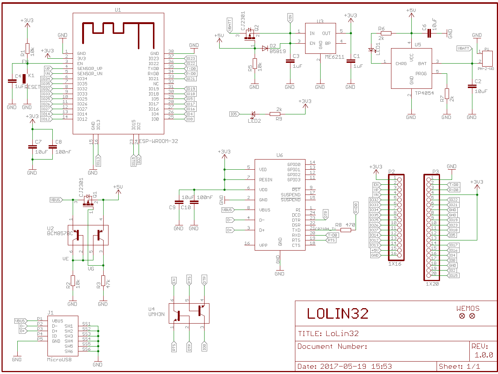
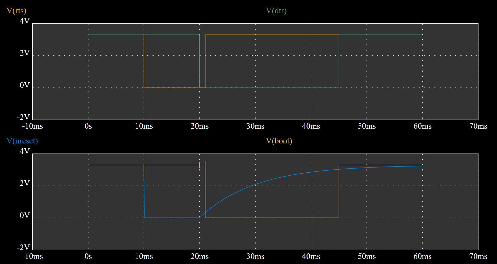
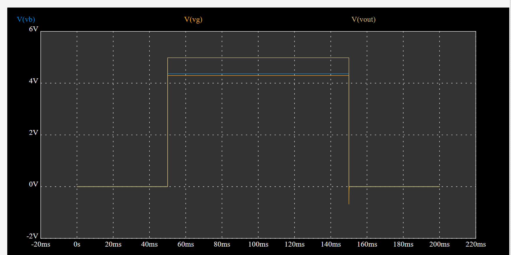

การทำความเข้าใจผังวงจรสำหรับบอร์ดไมโครคอนโทรลเลอร์ WeMos ESP32#
บทความนี้นำเสนอตัวอย่างผังวงจรของบอร์ดไมโครคอนโทรลเลอร์ที่มีการใช้ชิป Espressif ESP32 SoC เป็นตัวประมวลผลหลัก และการศึกษาฟังก์ชันการทำงานของวงจรในส่วนต่าง ๆ ของบอร์ด
▷ WeMos Lolin ESP32#
บริษัท WeMos.cc ซึ่งเป็นบริษัทในประเทศจีน ได้ผลิตบอร์ดไมโครคอนโทรลเลอร์ ESP32 ออกมาจำหน่าย โดยใช้ชื่อว่า LOLIN32 และมีหลายเวอร์ชัน ยกตัวอย่างเช่น บอร์ด "ESP32 LOLIN D32" และ "ESP32 LOLIN32 Lite" (ปัจจุบันทางบริษัทไม่ได้จำหน่ายแล้ว) ซึ่งมีความแตกต่างกันในรายละเอียด เช่น
- ESP32 LOLIN D32
- ใช้โมดูล ESP32 WROOM-32 ที่มีฝาครอบโลหะป้องกัน
- มี Onboard LED (active-low) อยู่ที่ขา GPIO-5
- ESP32 LOLIN32 Lite (v1.0.0)
- ไม่ได้ใช้โมดูล ESP32 WROOM-32
- มีชิป ESP32 SoC ชิปหน่วยความจำ SPI Flash และวงจรสร้างความถี่ 40MHz บนบอร์ด และไม่มีฝาครอบโลหะปิดไว้
- มี Onboard LED (active-low) อยู่ที่ขา GPIO-22
- ไม่มีขา USB (+5V)
สิ่งที่มีเหมือนกันทั้งสองบอร์ด
- มีขา Pin Header สามารถเสียบขาลงบนเบรดบอร์ดได้
- มีคอนเนกเตอร์ MicroUSB เป็นแหล่งจ่ายไฟเลี้ยง และเชื่อมต่อกับคอมพิวเตอร์ผู้ใช้
- มีไอซี ME6211 แปลงและควบคุมระดับแรงดันไฟฟ้า +3.3V
- ใช้ชิป CH340C USB-to-Serial Bridge
- มีวงจรชาร์จประจุ TP4054 สำหรับแบตเตอรี่ LiPo (3.7V) และคอนเนกเตอร์ PH2.0 สำหรับแบตเตอรี่
รูป: บอร์ด WeMos Lolin D32 (ซ้าย) เปรียบเทียบกับ Lolin32 Lite (ขวา)
รูป: บอร์ด WeMos Lolin D32
จากรูปผังวงจรของบอร์ด WeMos Lolin D32 จะทำให้เห็นองค์ประกอบและวงจรส่วนต่าง ๆ และเป็นผังวงจรที่ค่อนข้างง่ายต่อการทำความเข้าใจ

รูป: ผังวงจรของบอร์ด WeMos Lolin D32
▷ วงจรบนบอร์ดไมโครคอนโทรลเลอร์ ESP32#
วงจรที่พบเห็นได้ทั่วไปสำหรับบอร์ด ESP32 นอกเหนือจากวงจรของ ESP32 Module ได้แก่
- วงจร USB-to-Serial Bridge: มีการใช้ไอซี เช่น CP210x หรือ CH340x บอร์ดในรุ่นแรกมีคอนเนกเตอร์ MicroUSB สำหรับการเชื่อมต่อกับคอมพิวเตอร์ผู้ใช้ แต่เริ่มมีการเปลี่ยนมาใช้ USB Type-C มากขึ้น ซึ่งมีความทนทานมากกว่า
- วงจร Auto-Reset & Upload: นิยมใช้ไอซีทรานซิสเตอร์แบบ NPN จำนวน 2 ตัว นำมาต่อไขว้กัน (Cross-coupled) เพื่อรับสัญญาณ RTS กับ DTR มาจากชิปดังกล่าวเป็นสัญญาณอินพุตให้วงจร แล้วสร้างสัญญาณเอาต์พุตสำหรับขา EN (Reset) และ GPIO0 (Boot Mode Selection) ของชิปหรือโมดูล ESP32 วงจรประเภทนี้ จะช่วยให้ผู้ใช้ไม่ต้องมาคอยกดปุ่ม Boot และปุ่ม Reset ก่อนการอัปโหลดไฟล์เฟิร์มแวร์ทุกครั้ง
- วงจรใช้ไอซีประเภท LDO (Low-Drop-Out) Voltage Regulator: ทำหน้าที่แปลงแรงดัน เช่น 5V จากพอร์ต USB ให้เป็น 3.3V เพื่อใช้สำหรับการทำงานของวงจร และชิป ESP32
▷ วงจร Auto-Reset & Download#
สัญญาณ EN (Reset) และ GPIO0 (Boot) มีความสำคัญสำหรับชิป ESP32 กล่าวคือ จะใช้สำหรับการอัปโหลดไฟล์เฟิร์มแวร์ (.bin) จากคอมพิวเตอร์ของผู้ใช้ไปยังชิป SPI Flash บนบอร์ด ESP32
สัญญาณ EN (Reset) มีการต่อตัวต้านทานแบบ Pullup ขนาด 10k ไว้แล้วบนบอร์ด วงจรภายในสำหรับขา GPIO0 มีตัวต้านทานแบบ Pull-up ขนาด 45k โอห์ม เมื่อมีการรีเซตการทำงานเพื่อทำให้ชิป ESP32 เข้าสู่โหมด Bootloader ก่อนการอัปโหลดเฟิร์มแวร์ ขา GPIO0 จะต้องมีค่าลอจิกเป็น LOW และขา GPIO2 จะต้องอยู่ในสถานะ Floating (ไม่ได้ต่อใช้งาน) หรือเป็น LOW
ในโหมด Bootloader โปรแกรม ROM Serial Bootloader ซึ่งอยู่ในหน่วยความจำภายใน On-chip ROM
ของ ESP32 จะเริ่มทำงาน และรอการเชื่อมต่อกับโปรแกรม esptool.py
ในเครื่องคอมพิวเตอร์ของผู้ใช้ ผ่านทาง USB-to-Serial
แต่ถ้าขา GPIO0 เป็น HIGH หมายถึง Normal Boot Mode กล่าวคือ ชิป ESP32
จะเริ่มต้นทำคำสั่งตามโปรแกรมที่เก็บไว้ใน SPI Flash
รายละเอียดเกี่ยวกับการทำงานของ Auto Bootloader
สามารถศึกษาเพิ่มเติมได้จากเอกสาร
"Espressif ESP32: Boot Mode Selection"
รูป: ตัวอย่างวงจร Auto-Reset & Download
รูป: ไอซี Dual NPN Transistor (UMH3N) และการใช้งาน
รูป: ตัวอย่างการวัดสัญญาณ RTS, DTR, EN (Reset) แและ GPIO0 (Boot) ด้วยออสซิลโลสโคป
รูป: ตัวอย่างโค้ดบางส่วนของ esptool.py ที่เกี่ยวข้องกับการสร้างสัญญาณควบคุม
RTS และ DTR
การทำงานของสัญญาณ RTS และ DTR แบ่งออกเป็น 4 ช่วง ได้ดังนี้
รูป: สัญญาณ RTS และ DTR เมื่อเปลี่ยนจากสถานะ IDLE ไปสู่สถานะ Reset Device
รูป: สัญญาณ RTS และ DTR เมื่อเปลี่ยนจากสถานะ Reset Device ไปสู่ Enter Bootloader Mode

รูป: สัญญาณ RTS และ DTR เมื่อเปลี่ยนสู่สถานะ IDLE อีกครั้ง
ในการจำลองการทำงานของวงจร Auto Reset & Download มีลำดับขั้นตอนดังนี้
- เริ่มต้นด้วยสัญญาณ RTS และ DTR เป็น HIGH ซึ่งอยู่ในสถานะ IDLE ดังนั้นสัญญาณ EN (Reset) และ GPIO0 (Boot) จึงเป็น HIGH
- สัญญาณ RTS เปลี่ยนเป็น LOW ซึ่งจะทำให้สัญญาณ EN (Reset) เปลี่ยนเป็น LOW
- สัญญาณ DTR เปลี่ยนเป็น LOW จะทำให้ EN (Reset) เปลี่ยนเป็น HIGH แต่ระดับแรงดันไฟฟ้าของสัญญาณนี้จะค่อย ๆ เพิ่มขึ้น (ไม่ทันที) เนื่องจากมีตัวเก็บประจุไฟฟ้าต่ออยู่
- เมื่อสัญญาณ DTR เปลี่ยนเป็น LOW จะต้องรีบทำให้ RTS เปลี่ยนเป็น HIGH เพื่อทำให้สัญญาณ GPIO0 (Boot) เปลี่ยนเป็น LOW ซึ่งเป็นการทำให้ชิปเข้าสู่โหมด Bootloader
- เมื่อสัญญาณ EN (Reset) เปลี่ยนเป็น HIGH หลังจากเว้นช่วงเวลาระยะหนึ่งแล้ว (จบการรีเซต) จึงให้สัญญาณ DTR เปลี่ยนเป็น HIGH เพื่อทำให้สัญญาณ GPIO0 (Boot) เป็น HIGH อีกครั้ง
รูป: ตัวอย่างการจำลองการทำงานของวงจรด้วยซอฟต์แวร์ EasyEDA

รูป: ตัวอย่างคลื่นสัญญาณที่ได้จากการจำลองการทำงาน
บางกรณีอาจพบว่า โปรแกรม Arduino IDE หรือ esptool.py
(โปรแกรม ESP32 Bootloader Utility ที่เขียนด้วยภาษา
Python และใช้สำหรับการอัปโหลดเฟิร์มแวร์ผ่านพอร์ต USB-to-Serial)
ไม่สามารถอัปโหลดไฟล์ได้สำเร็จ ทั้งนี้ก็เป็นเพราะว่า ไม่สามารถทำให้ ESP32 เข้าสู่โหมด
Serial Bootloader ได้สำเร็จ และอาจมาจากสาเหตุหนึ่งคือ Timing
ของสัญญาณทั้งสองไม่ถูกต้องตามข้อกำหนดของชิป
วิธีการหนึ่งสำหรับแก้ไขปัญหาดังกล่าวคือ การต่อตัวเก็บประจุเพิ่ม เช่น ขนาดความุ 1uF ระหว่างขา EN กับ GND ของบอร์ด จึงจะใช้งานได้และเป็นการแก้ปัญหาในเชิงฮาร์ดแวร์ การต่อตัวเก็บประจุเพิ่ม ก็เป็นการเพิ่มค่า Time Constant ของวงจร RC ดังนั้นสัญญาณ RESET/EN จะถูกหน่วงเวลาในการเปลี่ยนจาก LOW เป็น HIGH หลังสัญญาณรีเซตแอคทีฟ
ปัญหาเหล่านี้ ไม่ได้เกิดจากฮาร์ดแวร์เพียงอย่างเดียว แต่อาจเกิดจากการทำงานของชิป USB-to-Serial และการสร้างสัญญาณ DTR/RTS ด้วย การใช้เครื่องออสซิลโลสโคปวัดสัญญาณเพื่อดูการเปลี่ยนแปลงและพารามิเตอร์ที่เกี่ยวข้อง ก็เป็นวิธีหนึ่งที่ช่วยเห็นสาเหตุของปัญหาได้
▷ วงจรแรงดันไฟเลี้ยง#
ในส่วนของวงจรหรือไอซีควบคุมแรงดัน LDO 3.3V ซึ่งเป็นแรงดันไฟเลี้ยงสำหรับ ESP32 นักออกแบบก็อาจเลือกใช้ไอซีที่แตกต่างกันไป เช่น ความสามารถในการจ่ายกระแสสูงให้เอาต์พุต โดยยังคงรักษาระดับแรงดันให้คงที่ไว้ได้ ตัวถังของไอซีที่เลือกใช้ (IC package) เป็นต้น
หากมีการเขียนโค้ดและใช้ ESP32 โดยตั้งค่ากำลังส่งสัญญาณ WiFi ให้มีกำลังไฟฟ้าสูงสุด และส่งต่อเนื่อง ปริมาณกระแสในระดับ Peak Current ก็อาจมากกว่า 300mA และถ้าหากต่อขา 3.3V จากบอร์ด ESP32 ไปใช้กับอุปกรณ์อื่นสำหรับการต่อวงจรเพิ่ม ก็จะเพิ่มภาระโหลดให้แก่ไอซีควบคุมแรงดันซึ่งเป็นอีกหนึ่งประเด็นหรือข้อควรระวังที่สำคัญในการใช้งาน
อีกประเด็นหนึ่งคือ การป้องกันกระแสเกินหรือแรงดันเกินในส่วนที่เชื่อมต่อกับ USB หรือ การต่อแรงดันไฟเลี้ยง +5V จากภายนอกแทนการจ่ายไฟผ่านพอร์ต USB วงจรเลือกแรงดันไฟเลี้ยงหากมีตัวเลือกมากกว่าหนึ่งที่ไม่ใช่แค่ VUSB +5V ที่มาจากพอร์ต USB และบางบอร์ดก็มีวงจรชาร์จแบตเตอรี่สำหรับ Rechargeable LiPo (3.7V single-cell) เป็นต้น ไอซี ME6211C33 เป็น LDO Voltage Regulator สามารถใช้แรงดันอินพุตในช่วง 2V～6.0V ได้
ตาราง: ข้อมูลเกี่ยวกับไอซี MicroOne ME6211C33
ลองมาดูผังวงจรที่ตัดมาบางส่วนสำหรับ บอร์ด WeMos Lolin D32 จะเห็นได้ว่า แรงดันไฟเลี้ยงสำหรับบอร์ด มีทางเลือกจากพอร์ตยูเอสบีและจากแบตเตอรี่
รูป: ผังวงจรของบอร์ด WeMos Lolin D32 ในส่วนที่เกี่ยวข้องกับแรงดันไฟเลี้ยง
ในผังวงจร VUSB เป็นแรงดันไฟเลี้ยงจากพอร์ตยูเอสบี
เชื่อมต่อผ่านไอซีทรานซิสเตอร์แบบ P-Channel Power MOSFET (CJ2301)
ซึ่งทำหน้าที่เป็นสวิตช์ไฟฟ้า ทำให้เปิดแรงดันไฟเลี้ยง +5V ของบอร์ด
ทรานซิสเตอร์มีการควบคุมที่ขาเกต (Gate: G) ด้วยไอซีทรานซิสเตอร์ (BCM8578C)
แบบ BJT (PNP) หนึ่งคู่
แรงดันไฟเลี้ยง +5V เชื่อมต่อผ่านตัวไดโอด B5819 หนึ่งตัว
(ป้องกันกระแสย้อนกลับทิศทาง) และได้เป็น VIN (Voltage Input)
ซึ่งแรงดันจะลดลงเล็กน้อยประมาณ 0.1V แล้วนำไปป้อนให้กับไอซี ME6211
และได้แรงดันไฟฟ้าเอาต์พุต +3.3V
ถ้าไม่เสียบสาย USB แต่มีการใช้แบตเตอรี่ต่อใช้งานอยู่ ก็จะได้แรงดันไฟเลี้ยงจากแบตเตอรี่แทน
(VBATT) โดยต่อผ่าน P-Channel Power MOSFET (CJ2301)
นำไปใช้งานเป็น VIN
ในกรณีนี้ จะไม่มีแรงดัน +5V และตัวต้านทาน 10k
ทำหน้าที่เป็น Pulldown ดึงลงไปยัง GND ทำให้แรงดันที่ขาเกตของมอสเฟต (ชนิดพี) เป็น 0V
และเนื่องจากแรงดัน จึงทำให้มอสเฟต (ชนิดพี) นำไฟฟ้าได้ดี
เป็นสวิตช์ที่ยอมให้กระแสไฟฟ้าจาก VBATT ไหลผ่านไปยังไอซี ME6211
การศึกษาการทำงานของวงจรที่ใช้ทรานซิสเตอร์เป็นสวิตช์ไฟฟ้าสำหรับการจ่ายแรงดันไฟเลี้ยงให้วงจร สามารถทำได้โดยการจำลองการทำงานของวงจรโดยใช้ซอฟต์แวร์ เช่น EasyEDA
รูป: วงจร Current Mirror Controlled P-MOSFET Switch เป็นสวิตช์สำหรับแรงดันไฟเลี้ยง VIN

รูป: การจำลองการทำงานของวงจรด้วย EasyEDA ซึ่งแสดงระดับแรงดันไฟฟ้าสำหรับ VB, VG และ VOUT เมื่อ VIN มีการเปลี่ยนแปลงระดับระหว่าง 0V และ 5V
รูป: วงจรเลือกแหล่งจ่ายสำหรับแรงดันไฟเลี้ยง ระหว่าง +5V (USB) และ VBATT
รูป: การจำลองการทำงานของวงจรด้วย EasyEDA เมื่อ VIN มีการเปลี่ยนแปลงระดับระหว่าง 0V และ 5V
▷ กล่าวสรุป#
บทความนี้ได้นำเสนอตัวอย่างผังวงจรของบอร์ด Wemos Lolin D32 โดยแบ่งวงจรออกเป็นวงจรย่อย เช่น วงจรสำหรับการรีเซตและเข้าสู่โหมด Bootloader วงจรจ่ายแรงดันไฟเลี้ยงและควบคุมแรงดันไฟฟ้า 3.3V บนบอร์ด โดยเลือกใช้แหล่งจ่ายจากพอร์ต USB และแบตเตอรี่ที่ชาร์จประจุได้
This work is licensed under a Creative Commons Attribution-ShareAlike 4.0 International License.
Created: 2023-12-24 | Last Updated: 2023-12-25